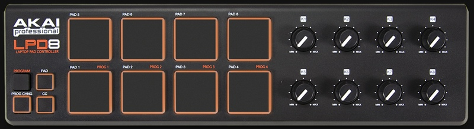
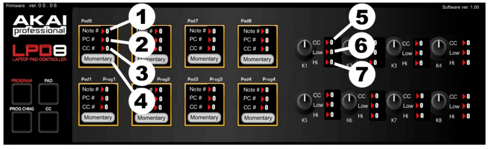

L'Akai LPD8 est une surface de controle économique, au toucher agréable, et robuste.
Dimensions 8.1cm x 30.2cm x 2.5cm, 310 grammes.
Les pads sont sensibles à l'intensité de la frappe, et les 8 potentiomètres sont de très bonne qualité.
En termes de qualité ( robustesse et finitions ) le LPD8 est bien au dessus de l'UC33 ou du NanoControl.
L'appareil n'est absolument pas cheap, les PADS sont en silicone et résistants.
Hors crossfades, en commande additionnelle cette petite surface vous intéressera pour piloter faders et LFOs, et déclencher des évènements via les pads.

Le LPD8 comprend 4 pages. Pour appeler une page:
Vous avez donc 4 presets de 8 rotatifs et 8 PADS ( ces derniers ont 2 modes de commandes envoyables par presets, qui pourront avoir des identifiants midi différents).
-
Connectez le LPD8, attendez que windows ait installé automatiquement les drivers génériques.
Lancez le LPD8 Editor
Dans la fenêtre [MidiInfo], connectez vous au port midi du LPD8 ( ! sous XP ce dernier apparait comme Périphérique Audio USB )
Maintenant que vous êtes connectés, sélectionnez l'un des 4 presets dans l'éditeur. Vous chargerez ainsi la configuration présente dans le LPD8.
Notez que l'édition du Channel Midi concerne toute la page du preset. Cet élément n'est pas éditable par commande.
Le LPD8 editor ne comprend pas les 4 presets en mémoire. Il permet de charger une page de preset précise, ou de sauver une page de preset précise, ou de rappeler une page de preset depuis le LPD8, vous ne faites pas les 4 pages de presets d'un coup.
Notez que si vous êtes connecté avec le LPD8 Editor, vous ne pourrez pas tester en même temps le LPD8 dans WhiteCat: un périphérique midi ne se partage pas entre deux applications.
Dans les contrôles il y a 3 colonnes, correspondant au Pitch du PAD en mode Note ( 1 ) / Programme Change ( 2 ) ou Control Change ( 3 ).
Seuls Note et Control Change sont entendus par WhiteCat.
Clickez le pitch du Note ou du CC à éditer.
Maintenez la souris appuyée et montez ou descendez jusqu'à obtenir la valeur de pitch désirée
Le mode Momentary peut être changé en Toggle ( 4 ). Notez que vous aurez parfois besoin d'utiliser à bon escient cette commande, notament pour piloter les go du séquenciel ( mettre en mode Toggle).
Momentary en mode PAD: j'appuyes et j'envoies un Key-On avec la valeur de ma frappe, je relache: j'envoie la un Key-Off valeur 127.
Toggle en mode PAD: j'appuyes j'envoies un Key-On avec la valeur de ma frappe. Je relâche rien ne se produit. Je réappuyes une deuxième fois: j'envoie un Key-Off valeur 127. Je relâche, rien ne se produit.
Momentary en mode CC: j'appuyes et j'envoies un Control-Change avec la valeur de ma frappe, je relache: j'envoie la un Control-Change valeur 0.
Toggle en mode CC: j'appuyes j'envoies un Control-Change avec la valeur de ma frappe. Je relâche rien ne se produit. Je réappuyes une deuxième fois: j'envoie un Control-Change valeur 127. Je relâche, rien ne se produit.

Même principe d'édition mais les paramètres ne sont pas les mêmes:
CC: le pitch du rotatif ( 5 )
Low: la valeur basse du rotatif
High: la valeur haute du rotatif
Ces identifiants ne sont pas soumis au mode PAD/CC.
Cliker [Commit Upload] pour charger la page de Preset qui est affichée en numéro de preset.
Quand vous faites un upload, il va falloir éditer les paramètres, sélectionner le preset, clicker commit upload pour charger le preset sélectionné dans le LPD8.
Si vos commandes sont les mêmes en termes de comportements, vous pouvez décider de garder les mêmes identifants, et de juste changer le numéro de Channel Midi par page.
Utiliser Save et Load Preset. Attention vous sauvez le preset N°1 OU N°2 OU N°3 OU N°4, pas les 4 dans un seul fichier.